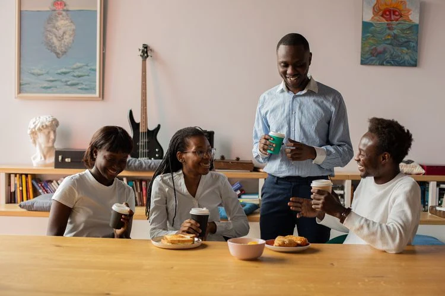
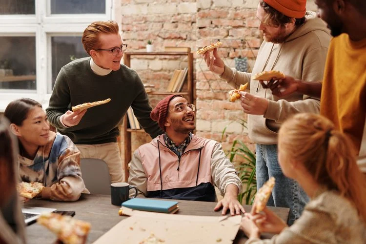
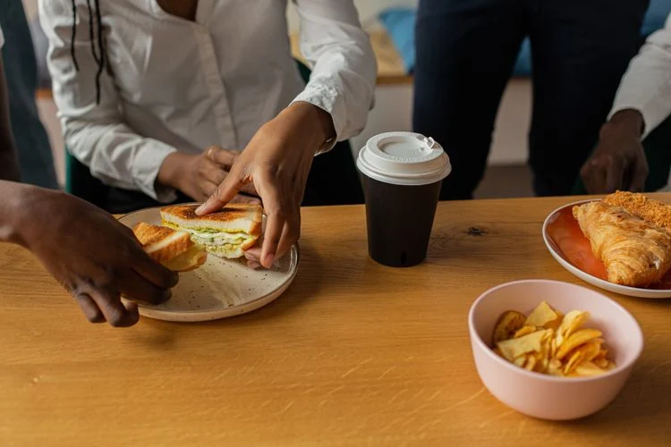
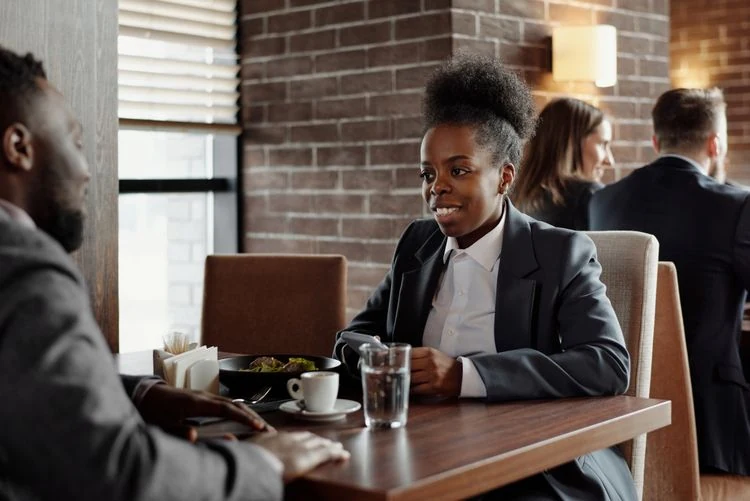
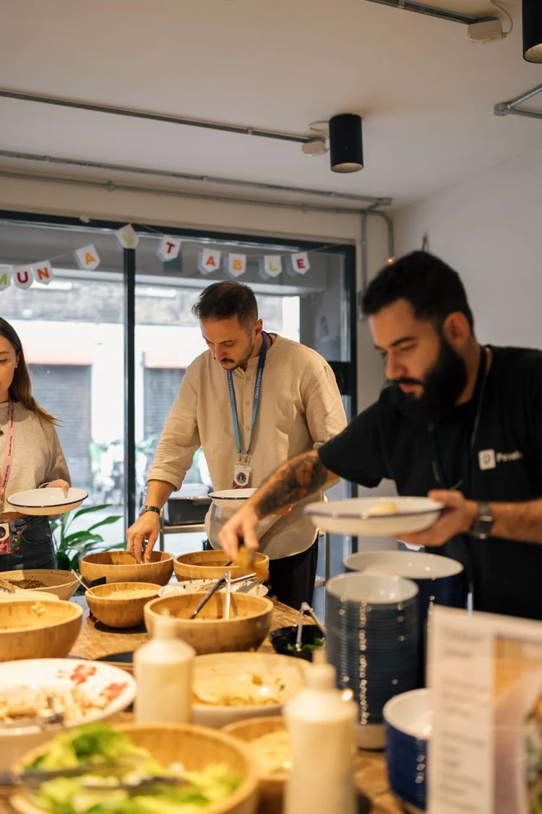

OPTION 1 · PEXELS #9489079
Office breakfast & conversation
My first choice for an approachable office audience. A full team, breakfast, and conversation are visible together.
Photo: Monstera Production
View original & download →Six alternative photos for the Meeting catering card, selected for a broader mix of people and a clear connection to office meals. Your current website photo has not been replaced.
My recommendations: Option 1 for a welcoming office breakfast, or Option 2 for a polished working lunch. Tell me which option number you prefer.
← Back to the website · View the original photo shortlist
My first choice for an approachable office audience. A full team, breakfast, and conversation are visible together.
Photo: Monstera Production
View original & download →My first choice for a more formal business tone. Food, a laptop, and note-taking make the meeting-catering connection clear.
Photo: Gustavo Fring
View original & download →
An energetic, casual office gathering. Best if you want to emphasize team lunches rather than executive meetings.
Photo: Diva Plavalaguna
View original & download →
A food-led alternative with less emphasis on faces. The sandwiches, coffee, and shared table communicate the offer immediately.
Photo: Monstera Production
View original & download →
A polished, professional option for coffee service or small meetings. Food is less prominent, so this is a secondary choice for catering.
Photo: August de Richelieu
View original & download →
The most direct service-focused option. People serving themselves makes the catering offer clear without looking like a generic boardroom.
Photo: Gül Işık
View original & download →